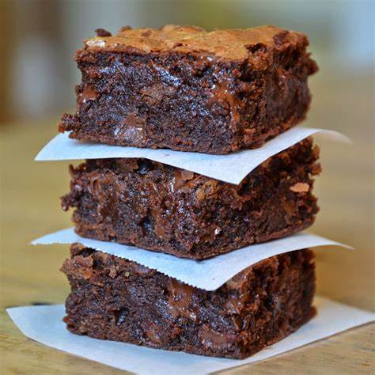

BROWNIE EN 4 PASOS

Ingredientes
- 100gr de manteca
- 150gr de chocolate
- 2 huevos
- 1 taza de azucar
- 100gr de harina 0000
Preparación
- Empezamos colocando la manteca y el chocolate en la sarten
- colocar fuego a minimo
- al fundir retirar del fuego y revolver
- en un bowl batir los huevos con el azucar
- agregarle el chocolate derretido a la mezcla y batir
- agregar harina e integrar
- llevar a horno fuerte por 20 minutos